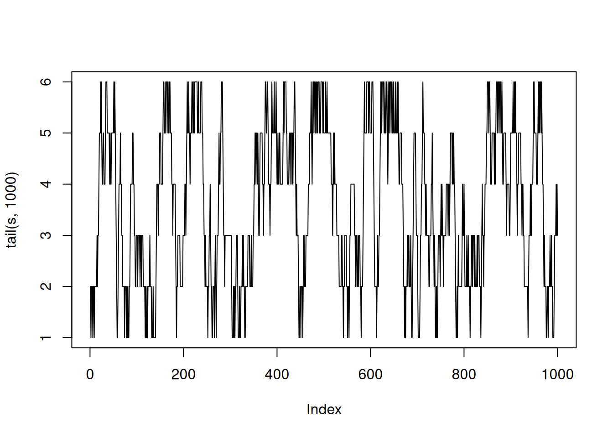

en donde se evidencia una alta asimetría en ambos parámetros. Se reparametriza el modelo usando las transformaciones \(\theta_1=\log\left(\frac{\eta}{1-\eta}\right)\), \(\theta_2=\log K\) y se obtiene la siguiente logverisimilitud transformada:
Warning in plot.xy(xy.coords(x, y), type = type, ...): "add" is not a graphical
parameter
A partir de esta muestra es posible obtener un intervalo de credibilidad exacto para cada parámetro usando el supuesto de normalidad:
npar$m[1]+c(-1,1)*qnorm(0.975)*sqrt(npar$v[1,1])
[1] -7.370559 -6.269027
npar$m[2]+c(-1,1)*qnorm(0.975)*sqrt(npar$v[2,2])
[1] 5.300255 9.851966
y por otro lado se puede calcular los intervalos de credibilidad directamente sobre la muestra:
quantile(mu_sigma_post[,1],probs =c(0.025,0.975))
2.5% 97.5%
-7.371918 -6.223499
quantile(mu_sigma_post[,2],probs =c(0.025,0.975))
2.5% 97.5%
5.244524 9.866338
4.2 Ejemplo sección 5.7, Albert
En un ejemplo anterior se había calculado la distribución posterior de la proporción de estudiantes que dormían más de 8 horas (\(p\)). Si queremos calcular los estimadores Monte Carlo de la probabilidad de que dos estudiantes duerman más de 8 horas (\(p^2\)) sería:
y a partir de esto se aproxima (usando el Teorema del Límite Central) un intervalo de credibilidad para \(p^2\):
est_posterior+c(-1,1)*qnorm(0.975)*se_posterior
[1] 0.1470265 0.1545206
4.3 Continuación Ejemplo 5, Albert.
En este caso usaremos el algoritmo de rechazo como una forma de mejorar el proceso de muestreo obtenido a través del método de Laplace. Recuerden que para utilizar este algoritmo se necesita una distribución propuesta (\(p(\theta)\)) que aproxime la distribución posterior sin tomar en cuenta la constante de normalización. Si asumimos una distribución t de Student multivariada como propuesta, entonces podemos encontrar una cota superior para la diferencia entre las log-densidades a través de:
En este ejemplo se ilustra una cadena discreta de Markov en donde una persona se mueve aleatoriamente en un conjunto de 6 estados solamente con un paso a la vez, y puede permanecer en el mismo estado de origen en cualquier momento. Si la probabilidad de permanecer en el mismo estado es igual a la probabilidad de avanzar o retroceder una posición, y asimismo las probabilidades de avanzar o retroceder son iguales, entonces la matriz de transición de la cadena de Markov asociada a este ejemplo es:
P <-matrix(c(.5,.5,0,0,0,0,.25,.5,.25,0,0,0,0,.25,.5,.25,0,0,0,0,.25,.5,.25,0,0,0,0,.25,.5,.25,0,0,0,0,.5,.5),nrow=6,ncol=6,byrow=TRUE)P
Graficamente, los últimos 1000 pasos se pueden representar:
plot(tail(s,1000),type='l')

Debido a que esta cadena de Markov es irreducible y aperiódica existe una distribución estacionaria que vamos a aproximar a través del cálculo de la frecuencia relativa en cada uno de los 6 estados:
m=c(500,2000,8000,50000)for (i in1:4){print(table(s[1:m[i]])/m[i])}
lo cual parece indicar de que hay convergencia a una frecuencia relativa estable por clase. La distribución estacionaria exacta se calcula a través del vector propio asociado al valor propio igual a 1 de la matriz \(P^T\):
Usando la siguiente tabla de datos agrupados, queremos hacer inferencia de la media \(\mu\) y desviación estándar \(\sigma\) de la altura en pulgadas de hombres universitarios:
donde los vectores int.hi y int.lo indican los límites superiores e inferiores de los datos agrupados (en pulgadas). El vector f indica la frecuencia de individuos por intervalo. Asumiendo una distribución normal en la altura de los individuos, y tomando la transformación \(\lambda=\log(\sigma)\), la distribución posterior se implementaría:
groupeddatapost=function(theta,data){ dj =function(f, int.lo, int.hi, mu, sigma) f *log(pnorm(int.hi, mu, sigma) -pnorm(int.lo, mu, sigma)) mu = theta[1] sigma =exp(theta[2])sum(dj(data$f, data$int.lo, data$int.hi, mu, sigma))}
Primero aproximamos la posterior a través de una normal multivariada con el método de Laplace. Para ello simulamos observaciones por nivel en la tabla agrupada, asumiendo que las alturas son constantes por grupo:
y <-c(rep(65,14),rep(67,30),rep(69,49),rep(71,70),rep(73,33),rep(75,15))mean(y)
[1] 70.16588
log(sd(y))
[1] 0.9504117
y a partir de lo anterior tomamos como punto inicial (70,1) en el algoritmo de Laplace:
Usando el cálculo anterior, tomamos como propuesta en el algoritmo de Metropolis-Hastings con caminata aleatoria una normal multivariada con escala = 2 y la misma matriz de varianza-covarianza anterior:
y por otro lado uno puede tener un resumen de las muestras posteriores vía MCMC:
summary(mcmc_ej)
Iterations = 1:8000
Thinning interval = 1
Number of chains = 1
Sample size per chain = 8000
1. Empirical mean and standard deviation for each variable,
plus standard error of the mean:
Mean SD Naive SE Time-series SE
mu 70.1678 0.19553 0.0021861 0.006537
log sigma 0.9799 0.05809 0.0006495 0.002016
2. Quantiles for each variable:
2.5% 25% 50% 75% 97.5%
mu 69.7960 70.0390 70.1741 70.293 70.551
log sigma 0.8729 0.9407 0.9784 1.019 1.095
4.6 Evaluación Práctica 4
La siguiente es la implementación de una función que calcule la verosimilitud de este ejemplo: